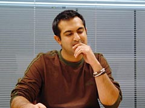
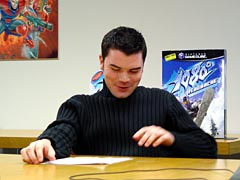
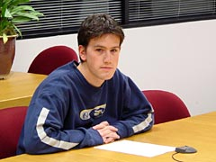
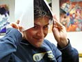
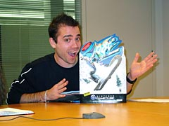
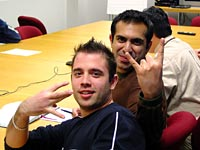
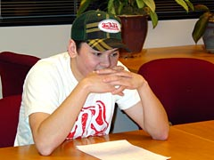
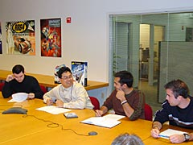

|
Ｎ.Ｏ.Ｍ 今回はNINTENDO64で出た『1080° スノーボーディング』の続編にあたるものですが、制作の経緯はどういうものだったんでしょうか。
山城 アメリカでは"エクストリーム・スポーツ"というジャンルが人気なんですね。ＢＭＸやスケートボード、サーフィン、今回のスノボといったゲームを総称してそう呼ぶんですが、こちらの市場ではすでに確立されたジャンルなんです。宮本のほうから「『1080°』の続編をＮＳＴで作ってくれないか」という打診が来ました。ゲームの内容からいって、ＮＳＴの方向性や市場のニーズに合ったものを作れるのではと。
Ｎ.Ｏ.Ｍ 今回のコンセプトはどういったものですか？

ヴィヴェック ハードがGCになったということで、新しい部分を引き出していこうと思いました。まず、『自然な世界観とチャレンジ性』の共存ですね。とにかく試行錯誤という意味では実験をたくさんやりました。その数々の実験のなかから『雪崩が背後から迫ってくる』という発想も出てきたんです。自然のなかでレースするけど、岩が降ってきたり動物が飛び出してきたら…というスリリングな部分も、そうして生まれました。
Ｎ.Ｏ.Ｍ 前作からの変更点や、パワーアップした点はどこでしょう？
ヴィヴェック 雪の上を滑っているという感覚は大事にしたかったのでそこは壊さず、それ以外はほとんど変更しました。でも続編ですから、キャラクターはそのまま引っ張ってきている部分もありますね。タラとラウルは新キャラです。
山城 キャラの動きにはモーションキャプチャーを使っているんですが、それもプロのボーダーさんにお願いしたりと、かなり作り込んでいます。

トレバー 風景は全てポリゴンで作ったんですが、自然のなかに動物がいたり、人工のものがあったり、天候や時間の変化を入れて、身近に感じてもらえるように工夫しました。いつもの事ながらゲームの仕様変更と締め切りを守るという点では大きなチャレンジでした。
ジョナサン 『ウェーブレース ブルーストーム』に次いで、２作目のGCソフト開発だったので、技術的にはすごく困ったということはありませんでした。ただ、今回はLANに対応させなくてはならなかったので、そこで試行錯誤しましたね。
山城 こちらのユーザーさんは、独自にインターネットにつなぐソフトを作って、ネット対戦されたりしているようです。やりこむプレイヤーが多いようですね。
|
|
Ｎ.Ｏ.Ｍ やはり今回のポイントは雪崩でしょうか。
ヴィヴェック そうですね。アバランチを組み込むために、アート、音楽、演出、効果音など色々な要素を結合しました。

ジョナサン プログラムの面では、アバランチをどう表現するかで苦労しました。やはりリアルさが要求されますし、逆に処理が重すぎるとゲームでは使えません。科学ドキュメンタリーや雪崩のビデオを買ってきたりして、研究しましたよ。
スコット このゲームでは、スピード感を表現するための技術、カメラワークや雪の質感の表現や演出が重要です。これらをどうやってリアルに表現するかでかなり考えましたね。
ヴィヴェック スタッフのなかにスイス出身でスノボ好きな人がいるんですが、彼は本物の雪崩に巻き込まれたことがあるという逸話を持っていまして。彼の体験は開発に役立ったんじゃないかな(笑)。
Ｎ.Ｏ.Ｍ 効果音や音楽が演出に大きな役割を持っているように感じましたが。
 ローレンス 新たに"ドルビープロロジックII"というサラウンドシステムを導入しました。前後左右、三次元で音が聴こえるというものです。これによって、後ろからはアバランチ、前をウサギが横切る…という演出が可能になったんです。それから効果音ですが、雪の質感が音から感じられるようにしました。
ローレンス 新たに"ドルビープロロジックII"というサラウンドシステムを導入しました。前後左右、三次元で音が聴こえるというものです。これによって、後ろからはアバランチ、前をウサギが横切る…という演出が可能になったんです。それから効果音ですが、雪の質感が音から感じられるようにしました。
山城 サウンドは、外部のライセンスミュージックと内部で制作した音楽が一緒に入っています。このジャンルをプレイするユーザーさんは、こういった楽曲が好きな方が多いんですよ。ライセンスミュージックを入れるにあたっては、レコード会社と協力して開発のほうからバンドのみなさんにお願いしたんです。ビジネス的に進んでいった話ではなく、コラボレーションに近い協力体制でした。
リチャード バンドの方に会いに行ったときは緊張してたんですが、いざ行ってみるとゲームのことを色々聞かれたりして。とても楽しく話せて、一緒にプレイもしてきました。「ニンテンドウのファンなので、曲を使ってもらえるのは嬉しい」と言ってましたよ。
Ｎ.Ｏ.Ｍ ところで開発のみなさんはスノボをなさるんですか？
ヴィヴェック ほとんど未経験の人ばかりでしたが、このソフトを開発するにあたってハマった人がたくさんいます。とある週末にリチャードとジョナサンがスノボへ行く約束をしていて、リチャードは仕事がどうしても終わらずにジョナサンひとりで行ったんです。リチャードが会社で仕事をしていると電話がかかってきて、スキーパトロールから「あなたの友人がケガをしました。迎えに来てほしいと言ってますよ」と(笑)。リチャードは車を３時間運転して迎えに行って、病院へ連れて行ったんです。結局、仕事もスノボもできなかったということに…(スタッフ爆笑)。

ジョナサン ケガはもう治りましたが、１ヶ月くらいは片手でキーボードを打ってました。『1080°』ならケガはしませんから、安心してプレイして下さい(笑)。
|
|
Ｎ.Ｏ.Ｍ テクニック的な部分を磨かないと先へ進めないと思うんですが、攻略のコツなんてありますか？

リチャード アバランチでは後ろを気にせず、平常心で滑ることですね。タック(しゃがみこみ)を上手く使いこなすことで、カーブの切り抜けもかなり上達します。それと、マッチレースで行き詰まったらタイムアタックをやってみるといいですよ。コインを取っていくルートって、実はいちばんの近道だったりするんです。あと、デザインチームはがんばってコインを隠しましたから、ぜひ全部のコイン探して下さい。これは僕らから日本のユーザーへの挑戦なんです(笑)。
山城 マルチプレイをしてもらうと、ひとりで遊ぶのとは全く違った遊び方ができます。あと、レールの上を滑ったりすれば隠しアイテムがゲットできたりも。この辺はチャレンジしてほしいですね。
Ｎ.Ｏ.Ｍ 日本のユーザーへメッセージをお願いします。

ヴィヴェック このゲームを通じて、自然界とスノーボーダーの関わりを感じてもらいたいですね。ぜひアバランチを体験して下さい。
リチャード これは俗に言う"洋ゲー"ではないと思います。日本のユーザーにも楽しんでもらえるゲームを目指したので、"任天堂のゲーム"として楽しんでもらいたいですね。

ローレンス レース前にサウンドを選べるので、お気に入りを使ってプレイしてみて下さい。それから隠れキャラもたくさんいます。そのなかに雪ダルマが出てくるんですが、その声はうちの娘の声なので、ぜひ聞いて下さい(笑)。
スコット 新しい試みとしてLAN対戦の設定を入れたので、マルチプレイと共にぜひ楽しんで下さい。
ジョナサン やりこみ度はかなり高くて、ボードの種類もかなりたくさんあります。ロケットの上に乗って滑るのもあります。僕としては、ロケットモードを楽しんでほしいですね。

トレバー 雪山の寒さを感じてほしいです。プレイの際にはジャケットを着込んで遊んで下さい(笑)。
山城 任天堂のゲームとしては、ちょっと系統の違うものができたと思います。これは"ＮＳＴとして『任天堂らしいゲームとは何か』を考えて創り出したもの"なんです。「本当のスノボをやったらこう感じるんじゃないか」という部分、ただ単純に滑っているだけでも楽しめるゲームを目指して作ってきたので、その部分を感じていただけたらとても嬉しいです。
Ｎ.Ｏ.Ｍ どうもありがとうございました！
|